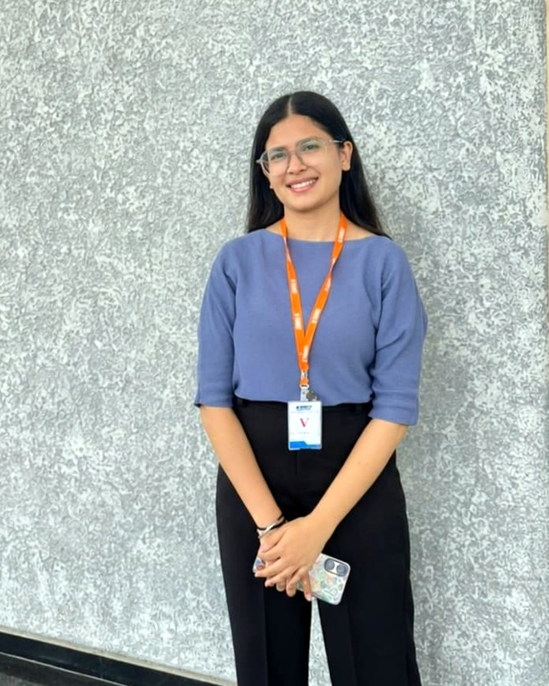
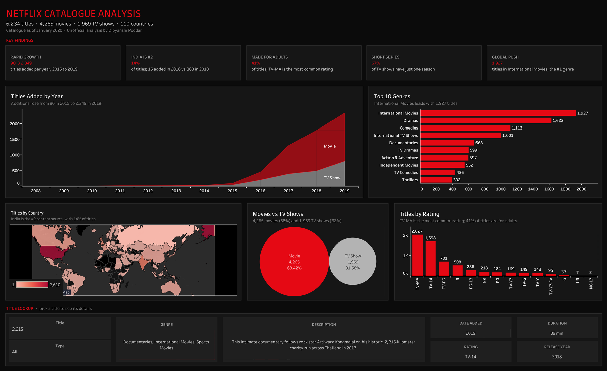

To find the slow, manual steps in any process and turn them into automated systems and clear dashboards, so teams get reliable numbers in minutes, not days.

about
Hello, I'm Dibyanshi.
I'm from Kolkata, the City of Joy, and my work has taken me to Mumbai, Delhi and Bengaluru. I'm an Operations and MIS analyst who turns slow, manual work into automated pipelines and clear dashboards, using SQL, Power BI, Tableau, Excel VBA and Generative AI.
At Pfizer I documented fulfilment workflows, at Hero FinCorp I automated MIS reporting with SQL, and at GoComet I cut rate onboarding from weeks to 2 hours.
- based in
- Kolkata, open to relocating anywhere
- languages
- English, Hindi, Bengali
- off the clock
- Exploring, dance, football, cooking, baking and caring for community animals
A workplace where no one loses hours copying data between spreadsheets, and every decision is made with live, trustworthy numbers, with AI doing the heavy lifting.
work
Selected work
Click a project to read the full case study: the problem, my approach, the results and what I learned.
Context
GoComet is a logistics procurement platform. A key strategic agribusiness account runs its freight tenders (RFQs) on it, using rates from many ocean carriers.
The problem
Every carrier sent rate sheets in its own non-standard layout, with its own names for ports, charges and lanes. Converting them into the platform’s RFQ format by hand took weeks, which made it the account’s most critical onboarding challenge, and every manual step was a chance for an error.
My approach
- Standardise: an Excel VBA macro reshapes each raw carrier rate sheet into one consistent structure.
- Map: a Generative AI workflow translates each carrier’s port, charge and lane names into the TMS-ready RFQ format.
- Validate: I defined data-validation rules with internal and client teams, so the rates are accurate before an RFQ goes live.
- Load: the clean file goes into the TMS, ready for the RFQ.
Key decision
I gave each tool one job: the macro handles structure, which stays the same, and AI handles the wording, which changes with every carrier. Keeping the two apart made the pipeline faster to build and easier to improve.
Results
Weeks → 2hrate onboarding turnaround
1 formatthe same clean output for every carrier
Faster RFQsquicker launches and shorter procurement cycles
What I learned
Automation works best when each step has one clear job. Breaking the work into standardise, map, validate and load turned weeks of work into a 2-hour routine.
Context
Support, tech and client queries from across the platform arrive as tickets in Freshdesk, GoComet’s support CRM.
The problem
Simple questions, such as how many queries are open, which bucket is slowest or which agent is overloaded, meant building a report by hand. Each round of reporting took around 3 hours, and nobody had one shared view of SLAs and workload.
My approach
- Built the dashboard directly on the Freshdesk CRM data, so it stays current as new tickets come in.
- Planned the pages around the questions each team asks: an all-in-one overview, then detailed Support, Tech and Client pages.
- Wrote 27 calculated fields for SLA adherence, resolution time, first response, ticket volume by client and type, and CSAT.
- Added a fifth page: an agent view across all three buckets.
- Styled it in GoComet’s brand colours so it felt like part of the product.
- Turned the insights into action: flagged high-volume clients, recurring issues and agent delays, which supported workload rebalancing and data-backed client service reviews.
Key decision
I built it on the live Freshdesk data instead of one-off exports, so nobody has to refresh or rebuild it. The numbers are always current.
Results
3h → 5 minreporting time
97%faster reporting
5 pagesone shared view for two teams
What I learned
I learned Looker Studio from scratch while building this. Starting from the questions people ask, not from the data that exists, kept every page focused.
The pages shown on this site are a faithful recreation with fictional clients, agents and figures, to protect confidential data.
Context
Hero FinCorp is a regulated lender. Leadership relied on daily and monthly MIS reports to track operations, productivity and compliance.
The problem
Reports were prepared by hand from several sources. It was slow, KPIs were hard to track week to week, and in a lender regulated by the RBI every number had to be right.
My approach
- Replaced manual data preparation for recurring MIS reports with SQL queries.
- Built Power BI dashboards for monthly newsletters, department productivity and bank-wise bounce analysis.
- Set up a KPI monitoring framework with weekly leadership updates.
- Built in checks: validated regulatory interest calculations, tracked cheque-issuance and delivery TATs, pending debits and reversals, and kept PLR, PAN and customer data accurate.
- Built operational volume forecasts for the Annual Operating Plan (AOP) from monthly trends, supporting workforce planning and capacity.
Key decision
Accuracy came before speed. I put validation into the routine first, so the faster, automated reports were also ones leadership could trust.
Results
50%+less manual effort
80%better unit productivity
100%database accuracy
100%RBI compliance supported
What I learned
In finance, a fast report that’s wrong is worse than a slow one. Building checks into the process is what made automation safe to rely on.
Context
Pfizer was moving customer fulfilment for Malaysia and Singapore onto a new business process platform, Atlas Prime.
The problem
Every fulfilment workflow had to be mapped and documented before the move, so teams in each market could run it the same way on the new system.
My approach
- Mapped the customer fulfilment workflows for both markets, step by step.
- Wrote the SOPs for Malaysia and Singapore, and supported Indonesia as well.
- Led SOP documentation across the Customer Fulfillment MIS cluster.
- Analysed India’s logistics workflows to find supply-chain bottlenecks, and worked with stakeholders on fixes.
- Wrote a distribution manual for the logistics service provider and redesigned its SOPs.
Key decision
I treated each SOP as something a new team member must be able to follow on day one, so I wrote for the people doing the work, not for the system.
Results
180% / 140%of targets, Malaysia / Singapore
160%of the S1 target
20%reduction from fixes to India logistics workflows
15%better efficiency with the logistics partner
What I learned
Clear documentation is what makes a system change stick. The rollout went well because the process was written down in a way people could actually use.
This work earned me the Best Employee, S1 Award for Asia Pacific.
Context
A fictional Indian online marketplace with 4,000 customers and 27,960 orders across 2024 and 2025, stored in 5 linked tables.
The problem
Where does revenue really come from, are customers coming back, and where is fulfilment failing? These are questions a real e-commerce team asks every quarter.
My approach
- Designed the 5-table database: customers, products, orders, order items and shipments.
- Agreed the metric definitions before writing queries: revenue counts only delivered orders, after discounts.
- Wrote 15 queries in four groups: basics, rankings and trends, customers, and operations.
- Used CTEs, window functions (LAG, ROW_NUMBER, NTILE), CASE WHEN for segments and a self-join for products bought together.
- Turned each answer into a business recommendation.
Key decision
I defined revenue once and used it everywhere. Mixing cancelled or returned orders into revenue is the most common way analyses end up disagreeing.
Results
71.8%of revenue from the top 20% of customers
71% → 26%first-month retention, early vs newer customers
58%on time for one courier (32% in sale weeks)
₹96 lakhin coupons that didn’t grow baskets
What I learned
Most “wrong” numbers come from unclear definitions, not bad SQL. Settling the definitions first saved rework on every query that followed.
Recommendations: a retention programme for new customers, a courier review before sale weeks, and targeted coupons instead of blanket ones.
Context
A food delivery hub in Bengaluru with two years of order history (2024–2025) needs to plan delivery partners for the month ahead.
The problem
How many orders will the hub get each day next month, and how many delivery partners should it schedule at the busiest hour?
My approach
- Turned 46,338 orders into a daily series.
- Added calendar features that move demand: weekday, IPL season, monsoon and festivals.
- Held back the most recent months as unseen test data, so accuracy was measured fairly.
- Compared three forecasting methods, including a simple baseline.
- Converted the January 2026 forecast into an hour-by-hour staffing plan.
Key decision
I chose linear regression: it had the lowest error and it’s easy to explain to an operations manager, which matters more than squeezing out the last fraction of accuracy.
Results
9.1%error, vs 13.5% for the baseline
≈ 33%more accurate than the baseline
2,035orders forecast for January 2026
5 / 6partners at the weekday / weekend peak
What I learned
A forecast only matters once it becomes a decision. Ending with a staffing plan made the numbers useful to the people running the hub.
Context
A public dataset of Netflix’s catalogue. I first built this dashboard as a college project in 2023.
The problem
When I revisited it in 2026, the genre chart showed combinations like “Dramas, International Movies” as single bars, and the map left out co-productions. The dashboard looked fine but its counts were wrong.
My approach
- Traced the cause: 77% of titles list several genres and 15% list several countries, all in one text field.
- Split genres and countries into their own linked tables, one row per title and genre, joined on the title ID.
- Counted distinct titles, so each title is counted once per genre or country.
- Removed partial and empty data, such as the incomplete 2020 year and missing ratings.
- Added click-to-filter actions across every chart, and a key insights strip.
Key decision
I restructured the data instead of patching individual charts, so every chart, filter and future addition counts correctly.
Results
2,610US titles (was 2,032 before the fix)
838India titles (was 777), now #2
1,927International Movies, the #1 genre
90 → 2,349titles added, 2015 vs 2019
What I learned
Check the grain of the data before trusting a chart: one row per title isn’t one row per genre. A chart can look right and still be wrong.
dashboards
My dashboards
Two dashboards in two tools: a Looker Studio support dashboard from my GoComet work, and a Tableau analysis of Netflix's catalogue.
Support performance dashboard GoComet · Looker Studio · 5 pages
A faithful recreation of my 5-page Looker Studio dashboard, with fictional clients, agents and figures to protect confidentiality.
Click any page to open it full size, then use the arrow keys to move between pages. Or download all 5 pages as a PDF.
Netflix catalogue analysis Tableau · interactive
6,234 titles analysed by year, genre, country and rating. Click the dashboard to open it live on Tableau Public and filter it yourself.

Open the live dashboard on Tableau Public ↗experience
Experience
Operations and analytics roles across logistics, fintech and pharma.

MIS Analyst at GoComet
GenAI rate-onboarding automation for a key strategic agribusiness account, and support analytics on Freshdesk data in Looker Studio.

Operations Analyst at Hero FinCorp
MIS automation with SQL, Power BI dashboards, AOP volume forecasting, KPI tracking and RBI-compliant operations.

Customer Fulfillment Intern at Pfizer Ltd
BPM implementation and logistics process mapping across Malaysia and Singapore.
Sales & Marketing Operations Intern at Tech Analogy
Promoted a company webinar with 4 college clubs, closed a course sale in the first week of the sales phase, and cleared the promotion interview to become Team Lead.
Social Media Marketing Intern at Suvidha Foundation
Grew the social media following by about 20 new followers a week, posted job openings on LinkedIn, and joined community initiatives such as tree-planting drives.
SwiftCare: an AI-powered ambulance platform
My BCA project idea, rebuilt from scratch in 2026. Customers describe an emergency in plain words and AI suggests the right ambulance; operators get AI dispatch suggestions for their own fleet; SwiftCare Super Ops sees the whole platform with AI-written insights. Includes live map tracking and bike, critical care and pet ambulances.
Generative AI (Gemini)Cloudflare WorkersJavaScript3 role-based logins
Screens from each login: customer, ambulance operator and SwiftCare Super Ops. Click to view full size.
podcast
On the CATKing podcast.
I was a guest on CATKing's MBA placement series, sharing how BML students prepare for summer internships.
Featured guest
How to prepare for Summer Internships: MBA Placement Guide for Freshers ft. BML Students
A conversation on CATKing's YouTube channel about getting ready for MBA summer internships, from the perspective of students at BML Munjal University.
Watch on YouTubemoments
Where the work happened.
Pfizer in Mumbai, a visit to the warehouse floor, and graduation day at BML Munjal University. Click a photo to enlarge it.
beyond work
Beyond the dashboards.
Caring for community animals is a big part of who I am.
I feed, rescue, vaccinate and sterilise community animals. It's something I do because I care, and it's a part of my life I'm genuinely proud of.
🥣FeedGiving them regular meals, so they don't go hungry.
🛟RescueHelping hurt and abandoned animals get the care they need.
💉VaccinateGetting them vaccinated to protect them from disease.
🩺SterilisePreventing unwanted litters, so fewer animals struggle on the streets.
Skills
SQLAdvanced ExcelForecastingPower BILooker StudioTableauExcel VBAGenerative AIn8nPostmanPython (basic)MIS reportingKPI trackingSupply chain analytics
Recognition
- Best Employee, S1 AwardPfizer Ltd, Asia Pacific, 2023
- FY Performance AwardHero FinCorp
- Featured guest on the CATKing podcastMBA internship guide ft. BML students, 2024
Education & certifications
- MBA, Operations & Business AnalyticsBML Munjal University, 2024
- BCAGuru Nanak Institute of Technology, 2021
- Supply Chain Data AnalystUnilever
- Develop Generative AI Applications: Get StartedIBM
connect
Let's connect.
Have a data problem, a role or just a question? Send me a message and I'll get back to you soon. Based in Kolkata, open to relocating.
EmailDibyanshipoddar29@gmail.com
LinkedInConnect on LinkedIn
GitHubgithub.com/dibyanshi29
Based in Kolkata · open to relocating anywhere.